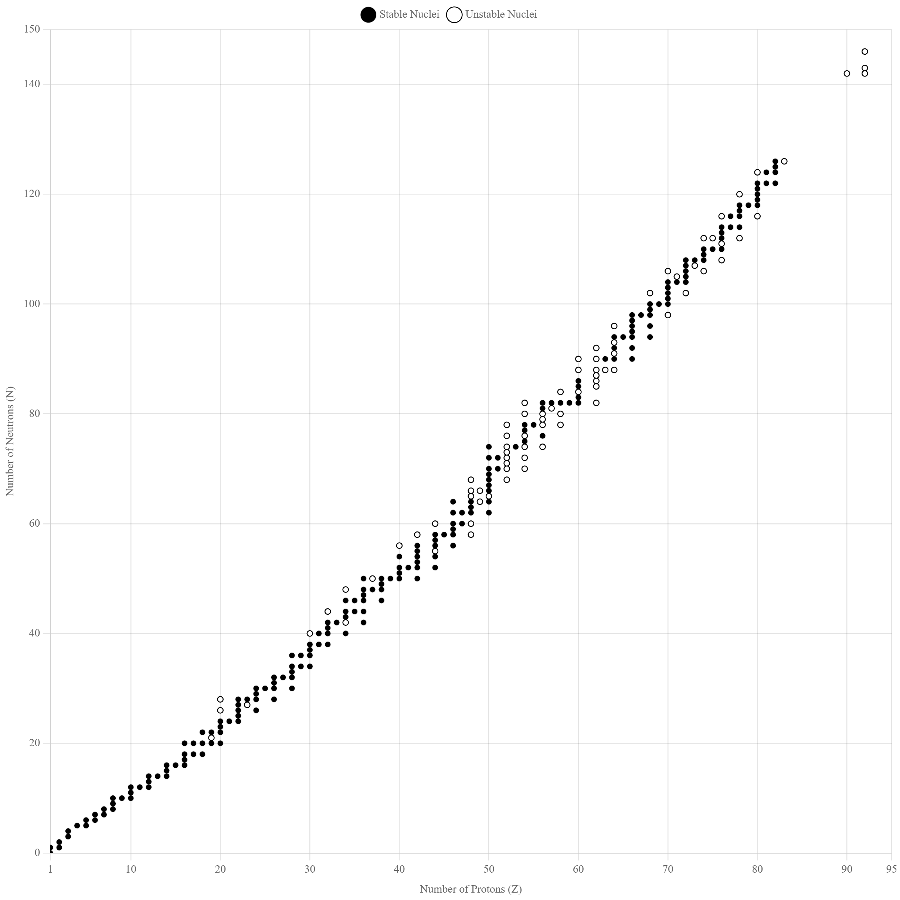
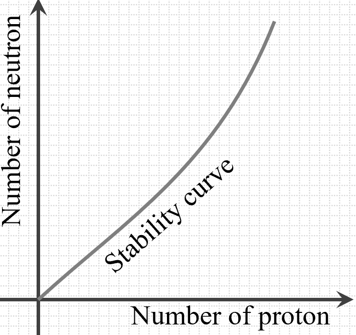
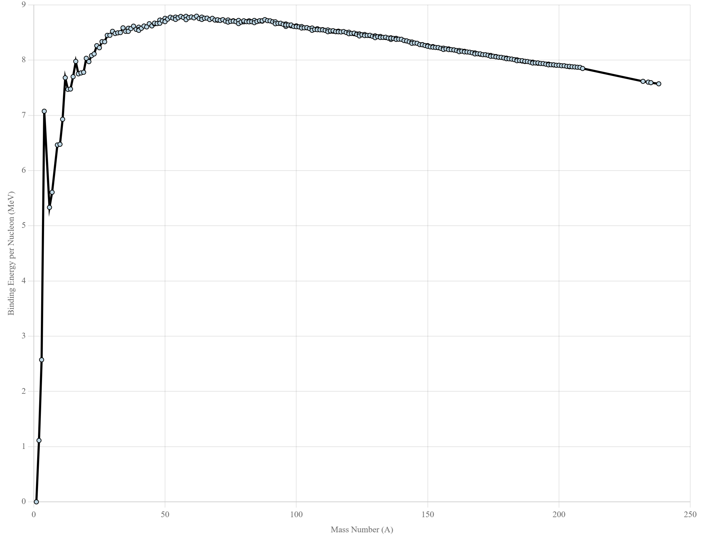
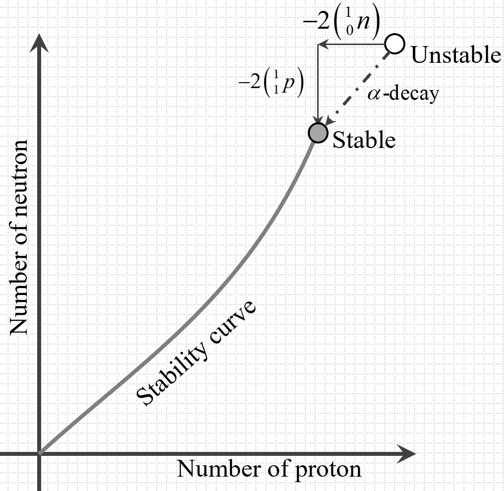
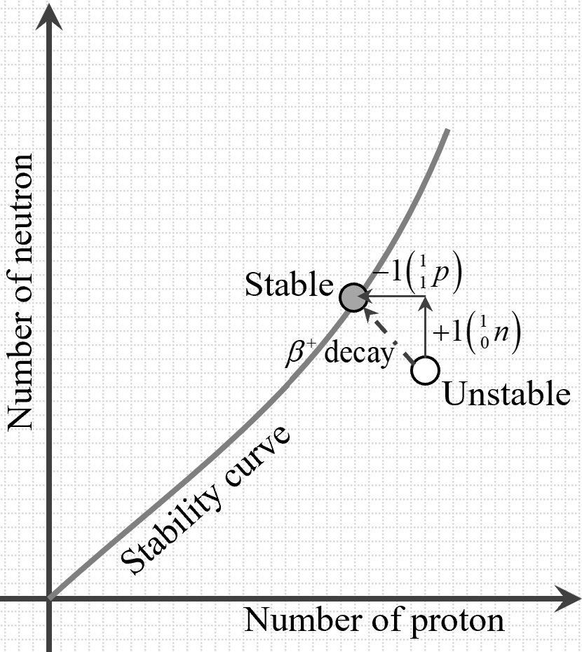
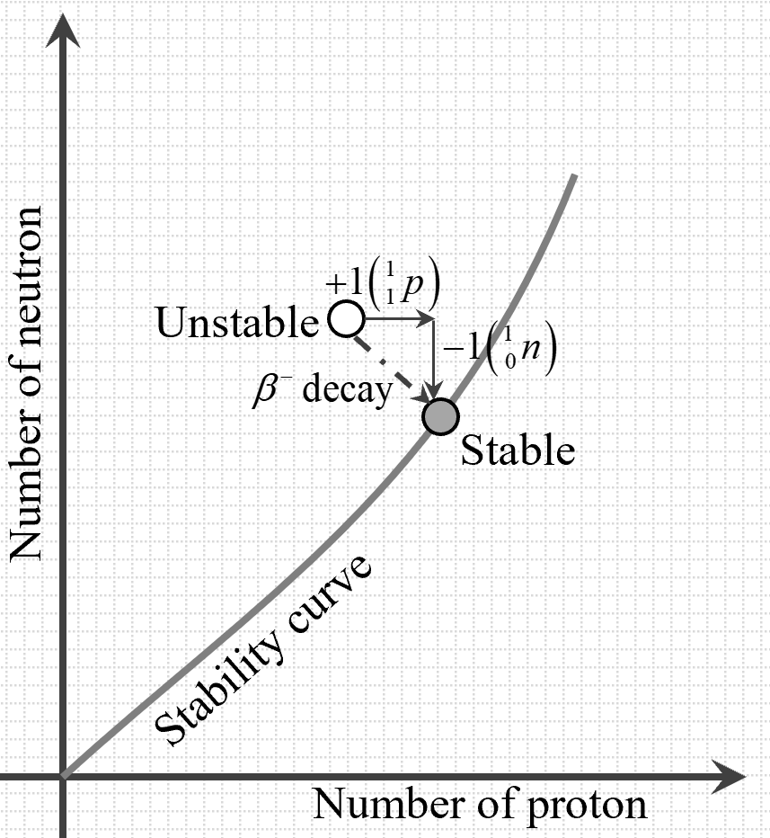

In the study of nuclear structure, understanding the fundamental particles that
make up matter is essential. Fundamental particles are the basic building blocks
of the universe and cannot be broken down into smaller components. Among these
particles, several play crucial roles in the composition and behavior of atomic
nuclei. These are:
Electrons
Electrons are subatomic particles with a negative charge of \(-e
-1.602 \times 10^{-19} \) coulombs and a very small mass of
approximately \( 9.109 \times 10^{-31} \) kilograms. They are stable
in isolation and are often referred to as beta minus (\( \beta^- \))
particles when emitted during radioactive decay. Due to the
uncertainty principle in quantum mechanics, there is a minimum
possible uncertainty in an electron's position, making it impossible
for electrons to reside within the nucleus. Electrons occupy the
electron cloud surrounding the nucleus and are responsible for the
chemical properties of atoms.
Protons
Protons are positively charged particles with a charge equal in
magnitude but opposite in sign to that of electrons (\( +e=+1.602
\times 10^{-19} \) coulombs) and a mass of approximately \( 1.673
\times 10^{-27} \) kilograms. They are stable in isolation and are
fundamental components of the nucleus. Protons contribute to the
identity of an element, as the atomic number (number of protons)
defines the element. The presence of protons in the nucleus, along
with neutrons, accounts for most of the atomic mass.
Neutrons
Neutrons are electrically neutral particles with a mass slightly
greater than that of protons, approximately \( 1.675 \times 10^{-27}
\) kilograms. While neutrons are stable within the nucleus, isolated
neutrons are unstable and undergo beta decay with a half-life of
about 14.7 minutes, transforming into a proton, an electron, and an
antineutrino. Neutrons play a crucial role in stabilizing the
nucleus by offsetting the electrostatic repulsion between protons.
The number of neutrons in the nucleus can vary among atoms of the
same element, leading to different isotopes.
Positrons
Positrons are the antiparticles of electrons, possessing the same
mass as electrons but with a positive charge (\( +1.602 \times
10^{-19} \) coulombs). Positrons are unstable in isolation, as they
annihilate upon encountering electrons, producing gamma-ray photons.
While positrons do not exist within the nucleus under normal
conditions, they are emitted during certain types of radioactive
decay known as beta plus (\( \beta^+ \)) decay, where a proton is
transformed into a neutron with the emission of a positron and a
neutrino.
Alpha Particles
Alpha particles are helium nuclei consisting of two protons and two
neutrons (\( \text{He}^{2+} \)). They carry a charge of \( +2e \)
and have a mass approximately four times that of a proton. Alpha
particles are emitted during alpha decay, a type of radioactive
decay common in heavy nuclei. When the electrons are removed from a
helium atom, the resulting ion is an alpha particle. Due to their
relatively large mass and charge, alpha particles have low
penetration power and can be stopped by a sheet of paper or human
skin.
Neutrinos and Antineutrinos
Neutrinos are nearly massless, electrically neutral particles that
interact very weakly with matter, making them extremely difficult to
detect. Antineutrinos are the antiparticles of neutrinos. They are
produced in various nuclear reactions, including beta decay.
Neutrinos and antineutrinos play a significant role in particle
physics and astrophysics research, helping scientists understand
fundamental processes like nuclear fusion in stars and supernova
explosions. Their elusive nature has prompted the development of
sophisticated detectors to study their properties and interactions.
Understanding these fundamental particles provides the foundation for exploring
nuclear structure and the interactions that govern atomic nuclei.
The nucleus lies at the core of the atom, containing protons and neutrons,
collectively known as nucleons. It remains unaffected by chemical changes or
alterations in electronic configurations, emphasizing its stability and central
role in atomic structure. The symbolic representation of a nucleus is often
given by:
\(\qquad
\ ^A_Z\text{X}
\)
where \( \text{X} \) is the chemical symbol, \( Z \) is the atomic number
(number of protons), and \( A \) is the mass number (total number of nucleons:
protons and neutrons).
From this notation, one can determine the number of protons, neutrons (\( N = A
- Z \)), and the overall composition of the nucleus.
Isotopes, isobars, and isotones are classifications of nuclei based on their
numbers of protons, neutrons, and mass numbers:
Isotopes
Isotopes are nuclei of the same element (same \( Z \)) but with
different numbers of neutrons (\( N \)) and thus different mass
numbers (\( A \)). For example, hydrogen has three isotopes: protium
(\( ^1_1\text{H} \)), deuterium (\( ^2_1\text{H} \)), and tritium
(\( ^3_1\text{H} \)).
Isobars
Isobars are nuclei with the same mass number (\( A \)) but different
atomic numbers (\( Z \)). This means they have different numbers of
protons and neutrons but the total number of nucleons is the same.
An example is \( ^{14}_6\text{C} \) and \( ^{14}_7\text{N} \).
Isotones
Isotones are nuclei with the same number of neutrons (\( N \)) but
different numbers of protons (\( Z \)). For instance, \(
^{15}_7\text{N} \) and \( ^{16}_8\text{O} \) both have eight
neutrons.
The size of the nucleus is crucial in understanding its properties. The volume
of a nucleus is directly proportional to its mass number (\( A \)), implying
that nuclei are roughly the same density regardless of size. Hence,
\(\qquad
V = V_0 A
\)
Thus, the radius (\( R
\)) of a nucleus is related to the mass number by the empirical formula:
\(\qquad
R = R_0 A^{1/3}
\)
where \( R_0 \approx 1.2 \times 10^{-15} \) meters. This leads to the conclusion
that nuclear matter has an incredibly high density, approximately \( 2.3 \times
10^{17} \) kg/m³. For context, neutron stars are celestial objects composed
almost entirely of nuclear matter, exhibiting densities similar to that of
atomic nuclei but on a macroscopic scale.
The stability of the nucleus is a fascinating aspect of atomic physics. Despite
containing multiple positively charged protons that repel each other due to
electrostatic forces, nuclei remain bound and stable. This stability is
attributed to the strong nuclear force, one of the fundamental forces in nature.
These forces are very strong within the nucleus, counteracting the electrostatic
repulsive forces between protons. However, they only act effectively over very
short distances (1-2 femtometers), which limits their range and affects
stability. The strong nuclear force has several key properties:
Short-Range Force
The strong nuclear force is effective only over very short
distances, on the order of a few femtometers (\( 10^{-15} \)
meters). Beyond this range, its influence rapidly diminishes.
Charge Independence
Nuclear forces are almost charge-independent, meaning they act
similarly between proton-proton, neutron-neutron, and proton-neutron
pairs, with slight variations due to spin dependencies.
Attractive Nature
The strong nuclear force is primarily attractive, overcoming the
electrostatic repulsion between protons and binding the nucleons
together within the nucleus. At close distances (around 1 fm),
nuclear forces are attractive, binding nucleons together. However,
at even closer distances (<0.7 fm), these forces become repulsive,
preventing the nucleons from collapsing into a single point and
stabilizing the nucleus.
Saturation Property
Each nucleon interacts only with its immediate neighbors due to the
short-range nature of the force, leading to a saturation effect
where adding more nucleons does not significantly increase the
binding energy per nucleon.
Spin Dependence
Nuclear forces depend on the relative spins of nucleons. For
example, nucleons aligned with parallel spins might experience
different forces compared to those with anti-parallel spins,
influencing the energy levels within nuclei.
Non-Central Nature
Nuclear forces include tensor
components, meaning they do not act directly along the line joining
two nucleons. This non-central aspect of nuclear forces is
responsible for the magnetic dipole-dipole interaction, adding
complexity to nuclear structures.
The stability of a nucleus is also closely related to the ratio of neutrons (\(
N \))
to protons (\( Z \)). For lighter elements with atomic numbers less than 20 (\(
Z < 20 \)), the number of neutrons is approximately equal to the number of
protons (\( N \approx Z \)). This balance minimizes the electrostatic
repulsion between protons while ensuring sufficient strong nuclear force to
hold the nucleus together. However, as we move to moderate-sized nuclei (\(
20 < Z < 81 \)), the number of neutrons exceeds the number of protons (\( N>
Z \)). This excess of neutrons helps to counter-balance the increasing
repulsive
forces between the greater number of protons and enhances the contribution
to nuclear stability. The following
graph illustrates the relationship between the number of neutrons and
protons across different elements:

Figure: Neutron number \(N\) vs. Atomic
Number
\( Z \).Take a closer observation here.
The graph displays a clear trend where nuclei with lower atomic numbers maintain
a near-equal number of neutrons and protons, while those with higher atomic
numbers require more neutrons to remain stable. This deviation from the \( N = Z
\) line occurs because additional neutrons provide the necessary strong nuclear
force to counterbalance the increased electrostatic repulsion among protons.
Without sufficient neutrons, larger nuclei would become unstable and prone to
radioactive decay. The curve formed by joining all the stable nuclei in this
graph is called stability curve:

Figure: The stability curve.
Thus, the neutron-proton ratio is a critical factor in
determining the stability and existence of various isotopes across the periodic
table.
Binding energy is a fundamental concept in nuclear physics that represents the
energy required to separate a nucleus into its individual protons and neutrons.
It serves as a measure of the nucleus's stability: the greater the binding
energy, the more stable the nucleus. This energy results from the mass
defect, where the actual mass of a nucleus is slightly less than
the sum of the masses of its constituent protons and neutrons.
When particles, such as nucleons, come close under the influence of the strong
nuclear force, they bind together, releasing energy. This is similar to how
gravitational or electrostatic forces work, where particles gain kinetic energy
and lose potential energy as they draw closer. However, in the case of nucleons,
the energy released upon forming a nucleus comes from the overall decrement in
mass of the system. As nucleons bind within a nucleus, the total mass of the
nucleus is reduced by a small amount, known as the mass defect (\(
\Delta m \)). This is consistent with Einstein's mass-energy
equivalence principle: (\( E = \Delta mc^2 \)).
This released energy would need to be supplied back to the nucleus to overcome
the nuclear forces and separate it back into individual nucleons. So, this
released energy during the formation of a nucleus is numerically the same as the
Binding Energy of the nucleus. Thus, binding energy represents both the energy
released during nucleus formation and the energy required to break the nucleus
apart to infinity.
For example, Deuterium (\( ^2_1\text{H} \)) is an isotope of hydrogen that
consists of one proton, one electron, and one neutron. Its expected atomic mass
can be calculated by adding the mass of hydrogen (which includes one proton and
one electron) and the mass of one neutron.
Atomic mass of hydrogen atom (1 proton + 1
electron): \( 1.007825 \, \text{u} \)
Mass of one neutron: \( 1.008665 \, \text{u} \)
Therefore, the expected atomic mass of deuterium is:
Expected atomic mass of \( ^2_1\text{H} = 1.007825 + 1.008665 = 2.016490 \,
\text{u} \)
The actual atomic mass of deuterium, however, is measured to be \( 2.014102 \,
\text{u} \). This difference is called the mass defect (\(
\Delta m \)), calculated as:
The binding energy (\( E_b \)) associated with this mass defect can be
calculated using Einstein’s mass-energy equivalence (\( E = \Delta m \times c^2
\)), where 1 atomic mass unit (u) is equivalent to 931.5 MeV:
This energy (2.224 MeV) represents the binding energy of the deuterium nucleus.
It is the energy required to separate the deuterium nucleus into its individual
nucleons (proton and neutron) and is also the energy released when deuterium is
formed from its constituent nucleons.
To determine the binding energy of a nucleus, a general method can be
followed:
Calculate the expected mass by adding the masses of
all protons,
neutrons, and electrons in the nucleus.
Measure or obtain the actual mass of the nucleus.
Determine the mass defect (\( \Delta m \)) by
subtracting the actual
mass from the expected mass.
Convert the mass defect into binding energy using
Einstein's
equation \( E = \Delta m c^2 \), where 1 atomic mass unit (u) equals
931.5 MeV.
The methods can be further understood from the following examples:
Illustrative Example 1: Binding Energy of \(
^{56}_{26}\text{Fe} \)
To calculate the binding energy of Iron-56 (\( ^{56}_{26}\text{Fe}
\)), follow the general method:
The binding energy of Carbon-12 is approximately 92.3 MeV,
reflecting its stable nuclear structure.
Binding Energy Per Nucleon
After discussing the concept of binding energy (BE), it is valuable to explore
the binding energy per nucleon as it provides deeper insights
into nuclear stability across different elements.
The binding energy per nucleon is defined as the total binding energy of a
nucleus divided by the number of nucleons (protons and neutrons) it contains.
Mathematically, it is expressed as:
\(\qquad
\text{Binding Energy per Nucleon} =
\dfrac{\text{Total Binding Energy}}{\text{Number of Nucleons}}
\)
While binding energy (\( E_b \)) represents the total energy required to
separate all the protons and neutrons in a nucleus and move them to infinity,
binding energy per nucleon provides an average measure of the energy needed to
remove just one nucleon from the nucleus. This average value is crucial for
comparing the stability of different nuclei, as it accounts for the number of
nucleons present. A higher binding energy per nucleon indicates a more stable
nucleus, meaning that more energy is required to disassemble it on a per-nucleon
basis.

Figure: Binding Energy Per Nucleon vs.
Mass Number
\( Z \).Take a closer observation here.
When plotted as a function of mass number (\( A \)) as shown in above graph,
binding energy per
nucleon follows a trend known as the "binding energy curve." The curve
peaks around elements like iron and nickel (mass numbers around 56),
indicating maximum stability. For lighter elements, the binding energy
per nucleon tends to increase as the mass number increases, reaching a
peak near iron. For heavier elements, the binding energy per nucleon
decreases, signifying lower stability.
The variation in binding energy per nucleon across different elements
explains why certain nuclear reactions release large amounts of energy:
Nuclear Fusion: In lighter elements
(with lower
binding energy per nucleon), fusing smaller nuclei to form a heavier
nucleus results in a higher binding energy per nucleon and thus
releases energy. This is the process that powers stars.
Nuclear Fission: For heavy elements
(like uranium
and plutonium), splitting a large nucleus into smaller nuclei leads
to products with higher binding energy per nucleon, also releasing
energy. This principle is used in nuclear reactors.
The binding energy per nucleon is thus not only a measure of stability but also
central to understanding energy production in nuclear reactions. It highlights
why nuclei around iron are most stable and why energy is released in both fusion
and fission processes.
The stability of atomic nuclei is primarily governed by the strong nuclear
force, which binds protons and neutrons together. However, this force has a
limited range, and its effectiveness weakens as the distance between nucleons
increases. This limitation contributes to the instability observed in certain
nuclei, particularly those of larger atomic numbers, where the electrostatic
repulsion between protons also becomes more pronounced. Nuclear instability is
influenced by several key factors:
Excessive Size
For elements with atomic numbers (\( Z \)) less than 20, stability
is generally achieved when the number of protons (\( Z \)) is
approximately equal to the number of neutrons (\( N \)), maintaining
a balanced neutron-proton ratio (i.e., \( N \approx Z \)). This
balance helps neutralize electrostatic repulsion among protons, as
the strong nuclear force effectively binds them together at this
scale.
As atomic numbers increase (20 < \( Z \) < 81), achieving stability
requires a higher number of neutrons relative to protons (i.e.,
\( N> Z \)). The increased neutron count helps counteract the
stronger electrostatic repulsion due to the higher proton count,
as seen in elements like lead and bismuth.
Beyond atomic number 81, the nuclei of elements like uranium become
inherently unstable regardless of the neutron count. At this large
scale, the strong nuclear force is no longer sufficient to counter
the intense repulsive electrostatic forces among protons. This
instability causes the nucleus to shift away from the stability
curve, as shown on the graph.

Figure: Stability achieved
through \(\alpha\) decay.
To regain stability, these large
nuclei often undergo alpha decay, where they emit
alpha particles (two protons and two neutrons) to decrease both size
and proton count, helping them move closer to the stability curve.
Example: Uranium-238 undergoes alpha decay to form
Thorium-234, moving it toward a more stable configuration.
Excess Protons
When a nucleus has too many protons, the increased electrostatic
repulsion among protons (all positively charged) destabilizes it,
causing it to move away from the stability curve. To counter this,
the nucleus can undergo beta plus (\( \beta^+ \))
decay, where a proton converts into a neutron, emitting
a positron and a neutrino. This is shown in below diagram:

Figure: Stability achieved through \(\beta^+\) decay.
This decay reduces the proton count,
decreasing the repulsive forces and moving the nucleus back toward
the stability curve by achieving a more balanced neutron-proton
ratio.
Example: Carbon-11 undergoes beta plus decay to
form Boron-11, helping it return to a stable configuration.
Excess Neutrons
Excess neutrons, though neutral in charge, can still destabilize the
nucleus by disrupting the balance of nuclear forces. Neutron-rich
nuclei are shifted away from the stability curve, as shown in the
graph.

Figure: Stability achieved through \(\beta^-\) decay.
To regain stability, a neutron can convert into a proton via
beta minus (\( \beta^- \)) decay, emitting an
electron and an antineutrino. This transformation increases the
proton count, adjusting the neutron-proton ratio and bringing the
nucleus closer to the stability curve.
Example: Carbon-14 undergoes beta minus decay to
form Nitrogen-14, stabilizing the nucleus.
Excited State of Nucleons
Even if a nucleus has the correct neutron-proton ratio, it can still
be unstable if its nucleons are in an excited energy state above the
ground state. This state causes the nucleus to deviate from the
stability curve. Through gamma decay, the nucleus
can emit high-energy gamma photons to release excess energy,
allowing the nucleons to transition to a lower, more stable energy
state without changing atomic number or mass number. This moves the
nucleus back toward the stability curve, as seen in the graph.
Example: Cobalt-60 in an excited state undergoes
gamma decay, releasing excess energy and moving toward a stable
configuration.
Through these decay processes—alpha decay, beta plus decay, beta minus decay,
and gamma decay—nuclei adjust their composition and balance the internal forces,
achieving more stable configurations. Understanding the factors influencing
nuclear instability is crucial in studying radioactive decay, nuclear reactions,
and the synthesis of heavier elements in stellar environments.